| Rick Sternbach:
projetista do sculo 24
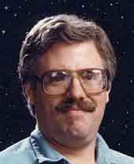 |

Galeria:
"Conhea mais do trabalho de Rick Sternbach"
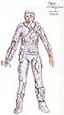
Conceito inicial para os Borgs
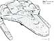
Nave Vulcana de "Unification"
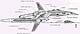
Primeiro conceito para a Voyager
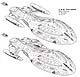
A Voyager e uma nave auxiliar
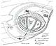
Detalhe do disco defletor(Voyager)
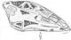
A nave Delta Flyer (Voyager)
|
Trek
Brasilis - Seu primeiro envolvimento com o franchise foi em
1979, em "Jornada nas Estrelas - O Filme". Como
voc se envolveu com o projeto e o que voc fez naquele filme? Rick Sternbach - Eu encontrei o designer de produo Joe Jennings no fim de 1977, quando "O Filme" ainda era a segunda srie de TV de Jornada em desenvolvimento, e, embora no houvesse uma vaga disponvel para o projeto, eu deixei um carto e um currculo para trs. Em abril de 1978, logo antes de o filme ser anunciado, Joe me ligou e perguntou se eu gostaria de vir a bordo. Naturalmente, eu disse sim. Eu fiz um bom nmero de rascunhos de cenrio, layouts grficos de painis de controle e de sinalizao do interior da nave e alguns designs de equipamento durante um perodo de cerca de oito meses. TB - verdade que quando voc ouviu sobre uma nova srie de Jornada voc imediatamente ligou para Gene Roddenberry para trabalhar nela? Por que voc estava to ansioso para estar em Jornada novamente? 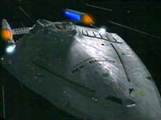 Sternbach - Eu estava em uma auto-estrada quando ouvi a notcia no rdio, e imediatamente parei em um posto de gasolina e liguei para o escritrio de Gene. Susan Sackett, a assistente de Gene, me garantiu que as coisas estavam andando e que eventualmente eles iriam querer ver meu trabalho. Jornada nas Estrelas sempre foi uma combinao intrigante de personagens interessantes, histrias de fico cientfica e designs de equipamento espacial, e tudo isso me atraa.TB - Junto com Michael Okuda, Andrew Probert, Herman Zimmerman e outros, voc desenvolveu o estilo visual de Jornada pelos ltimos 15 anos. Parece que cada um de vocs tem sua prpria especialidade. Como as tarefas de design so divididas entre vocs? Sternbach - Um ilustrador de filmes e televiso como eu tipicamente tem a tarefa de criar desenhos que no so normalmente vistos na tela, mas so usados para criar outros elementos que so vistos, como cenrios, equipamentos e veculos. Um artista cnico como Mike tipicamente faz arte que vista diretamente no cenrio, e o designer da produo supervisiona o departamento de arte. TB - John Eaves, Herman Zimmerman e Michael Okuda j esto confirmados para estar na prxima srie de Jornada, e voc est deixando o franchise. Voc pretendia sair? Rick Berman e Brannon Braga deram alguma razo para no escolh-lo? Sternbach - Eu no estou saindo por minha deciso. Eu j tinha ouvido que Eaves estava sendo colocado para trabalhar nos designs da Srie V antes de fecharmos o departamento de arte de Voyager, e eu simplesmente esperei para ouvir se eu seria requisitado para o novo programa enquanto conclua o trabalho em "Endgame". Quando o pedido no veio, eu terminei de empacotar minhas coisas e decidi passar a outros projetos. Ningum do escritrio de produo ou de outro departamento de arte fez algum contato comigo sobre a nova srie, a favor ou contra, o que decepcionante apenas pelo senso de falta de profissionalismo da parte deles. Outros membros da equipe tambm relataram experincias semelhantes. Tecnicamente falando, entretanto, eu havia sido contratado para a ltima temporada de Voyager, e a companhia no tinha realmente nenhuma obrigao de fazer nada alm do que eles fizeram. TB - At onde sabemos, a nova srie ser uma pr-sequncia, em uma nova Enterprise. Voc sabe de algo a respeito que possa nos contar? Sternbach - No tenho nenhum pista alm do que todos estamos lendo na internet. TB - Voc poderia falar um pouco sobre as dificuldades que voc antecipa para criar um visual que precede a srie original de Jornada? Como voc lidaria com elas? Sternbach - Eu no caracterizaria o trabalho de design como tendo alguma dificuldade. Para mim, seria simplesmente uma questo de encontrar a poca envolvida, pegar todos os dados fornecidos pelo designer de produo, pelos roteiristas e pelos produtores, e costurar o equipamento e os veculos necessrios a se encaixar nos requisitos. J sabemos que a poca pr-Clssica, ento as decises s teriam de ser feitas sobre as capacidades dos veculos, os painis e os controles, pilotagem, armas etc. Eu trabalharia em uma evoluo definida do design; ou seja, mostrar elementos reconhecveis do equipamento que vimos na Srie Clssica e do que poderamos ter hoje, e criar uma sntese. Resta saber se eles vo mesmo fazer isso. TB - Aps passar 15 anos criando equipamentos, naves e cenrios para Jornada, difcil manter as coisas parecendo novas? Como voc resolve isso? Sternbach - No to difcil criar novas aparncias se voc entende o material com que est comeando. um pouco uma questo de balancear, entre inventar algo muito, muito novo que talvez seja um pouco radical demais e inidentificvel, e algo que parece bastante com as velhas coisas que j vimos. Alguns dos melhores designs deveriam te remeter, ao menos subconscientemente, a algo anterior. TB - Seu ltimo trabalho em Jornada foi para o finale de Voyager. O que os fs podem esperar, de um ponto de vista visual? Muitos efeitos especiais? Muitas naves novas? Cenrios? Aliengenas? Sternbach - Eu no vi tudo que est sendo feito para o trabalho de CGI [imagens geradas por computador], mas contribu com alguns designs de veculos da Frota Estelar e alguns tens Borgs. Claro, haver muitos novos efeitos visuais; o roteiro certamente fala sobre algumas empolgantes sequncias de ao espacial. Sobre novos cenrios e aliengenas, haver alguns novos, outros que j vimos. 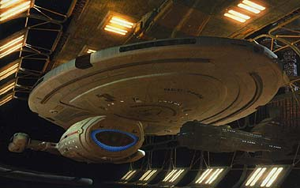 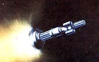 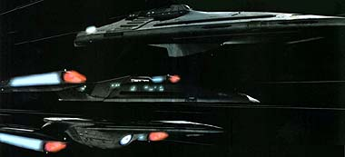
|